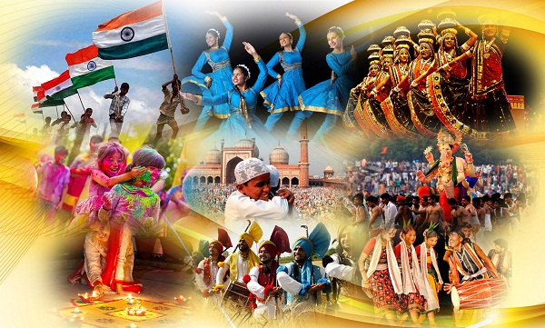
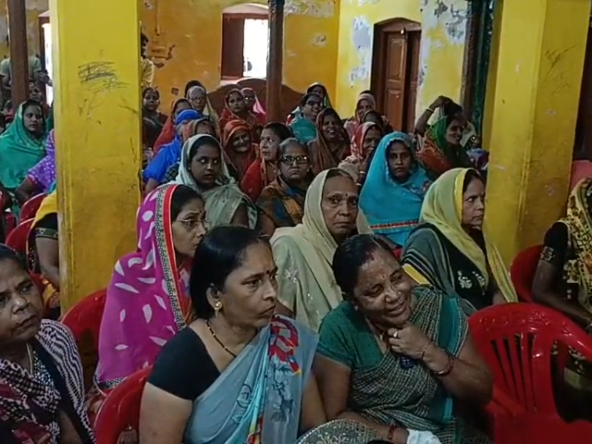
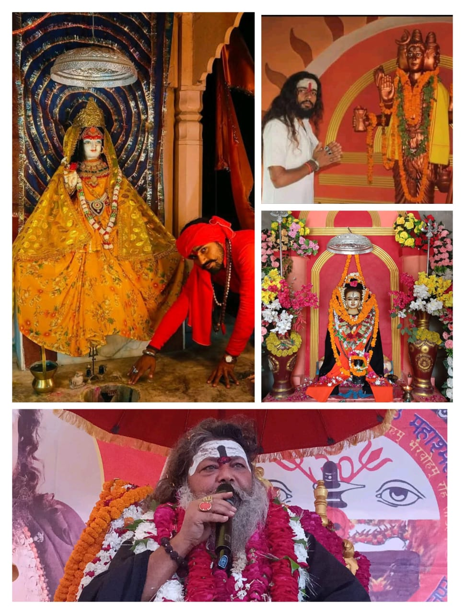
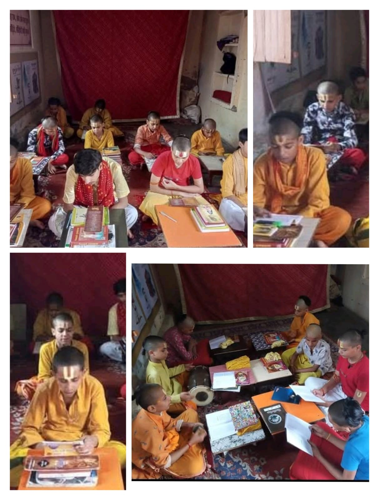
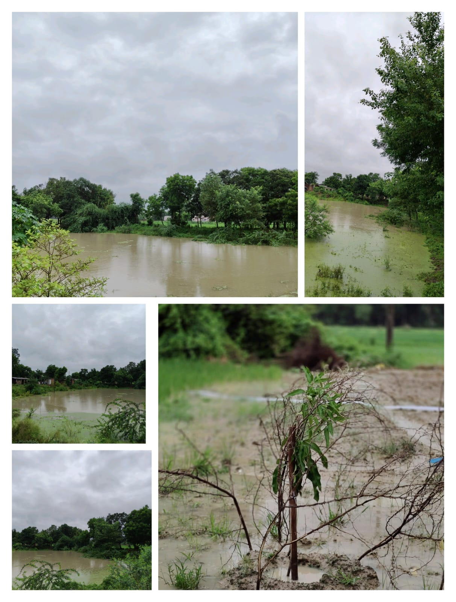
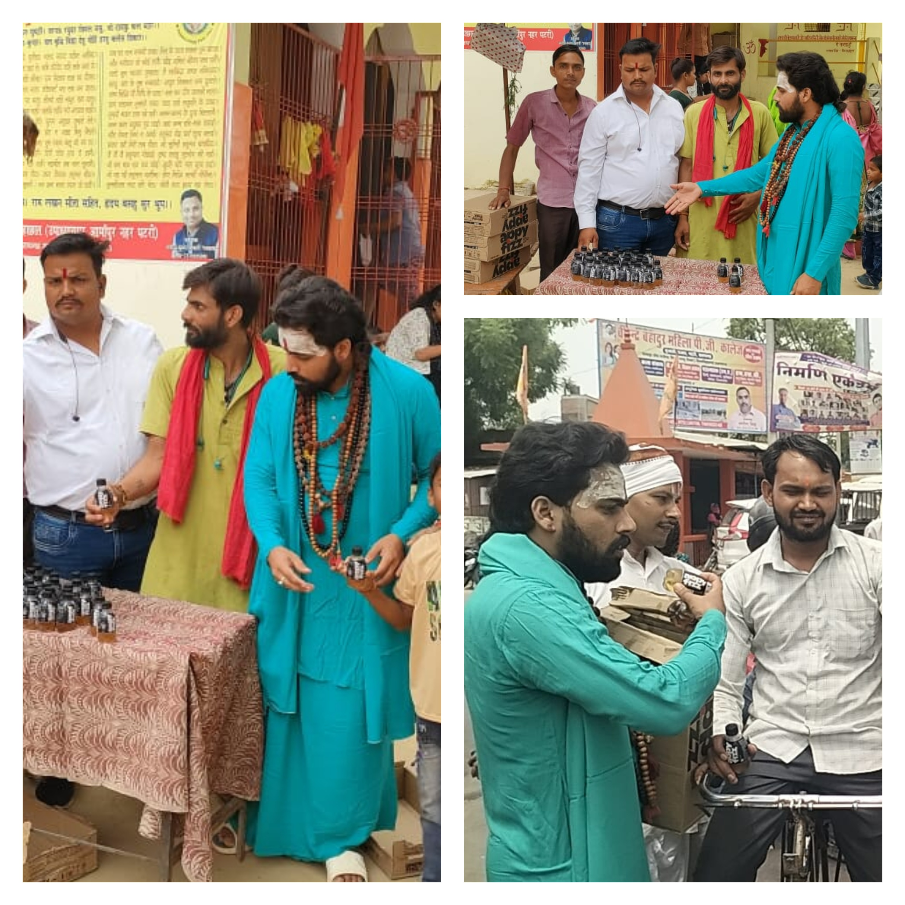
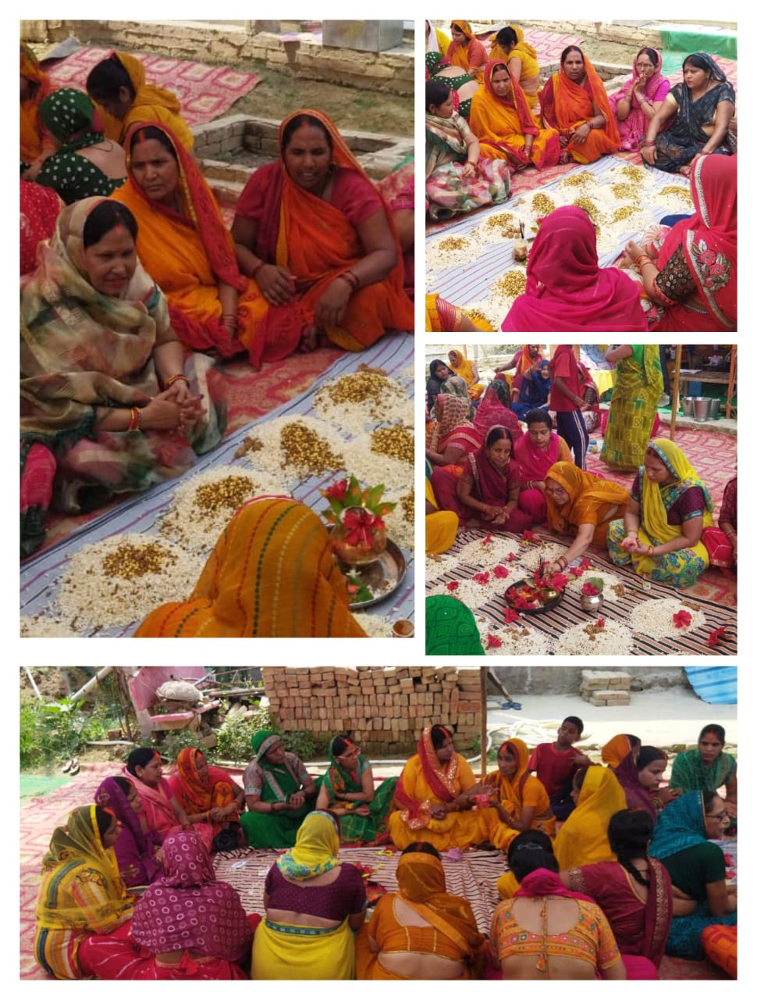
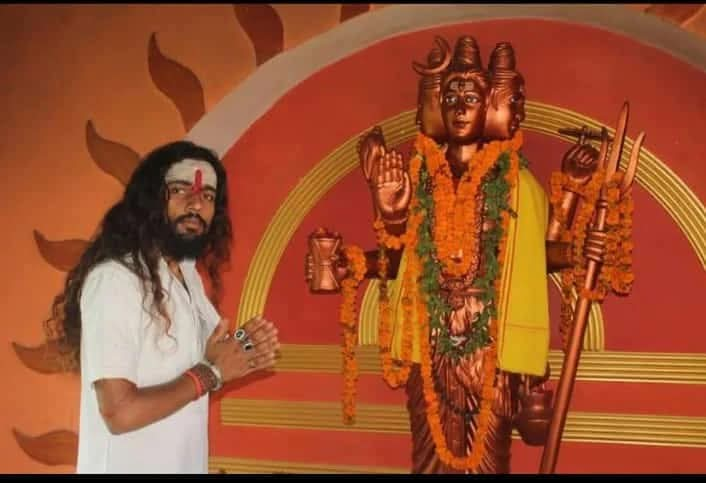
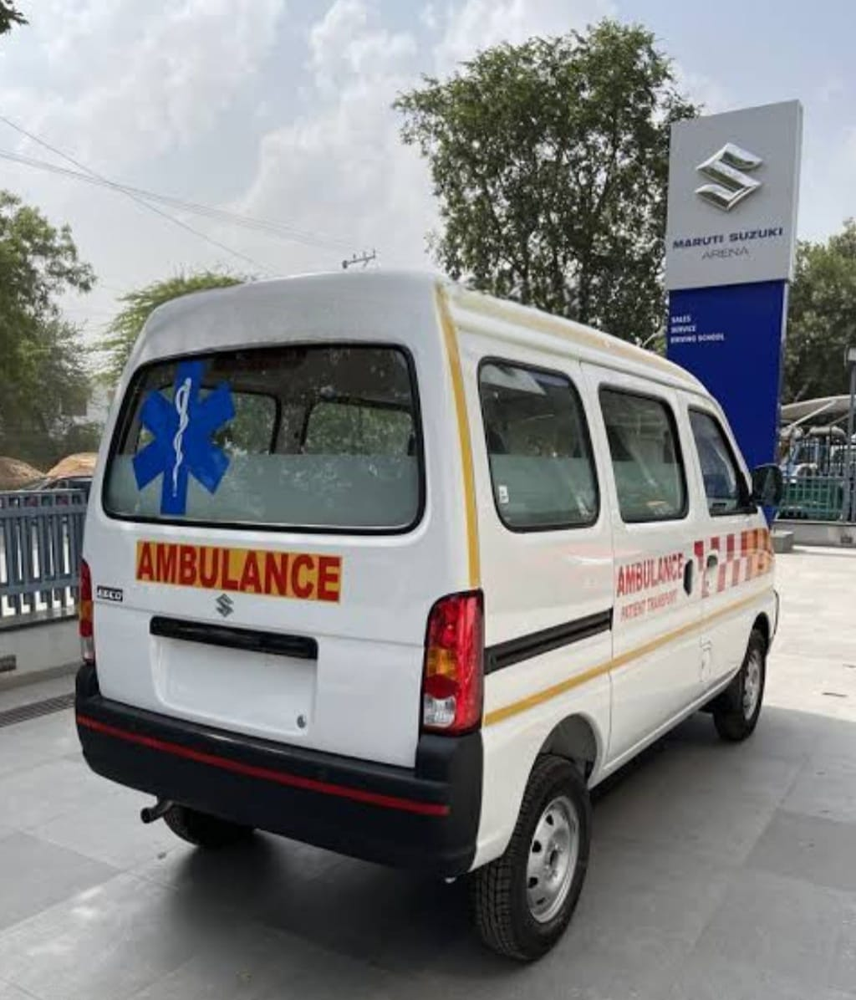

धार्मिक एवं सांस्कृतिक जागरूकता
समाज को अपनी जड़ों और सनातन मूल्यों की याद दिलाना ही इस पहल का मुख्य उद्देश्य है। हमारे प्राचीन ग्रंथों, त्योहारों और आध्यात्मिक परंपराओं के व्यावहारिक महत्व को आज की युवा पीढ़ी तक पहुंचाना अनिवार्य है। इसके तहत विभिन्न कार्यशालाओं, सांस्कृतिक उत्सवों और बौद्धिक चर्चाओं का आयोजन किया जाता है, ताकि लोग अपनी महान विरासत पर गर्व कर सकें।

पिछड़े वर्गों के कल्याण हेतु कार्य
समाज के हर वर्ग को समान अवसर और अधिकार मिलना ही सच्चे विकास की परिभाषा है। पिछड़े और वंचित वर्गों को आर्थिक, सामाजिक और शैक्षिक रूप से सशक्त बनाने के लिए विशेष कौशल विकास कार्यक्रम (Skill Development) चलाना, सरकारी योजनाओं का लाभ सीधे उन तक पहुंचाना और रोजगार के नए अवसर सृजित करना न्यास की मुख्य प्राथमिकता है।

जीर्ण मंदिरों का जीर्णोद्धार
हमारे प्राचीन मंदिर केवल पूजा स्थल नहीं हैं, बल्कि वे हमारी कला, वास्तुकला और इतिहास के जीवंत केंद्र हैं। समय के साथ उपेक्षित और जर्जर हो चुके इन ऐतिहासिक धार्मिक स्थलों का प्राचीन कला के मानकों के अनुसार वैज्ञानिक पद्धतियों से पुनरुद्धार करना बेहद जरूरी है। इस कार्य से हमारी वास्तुकला संरक्षित होती है और सांस्कृतिक चेतना जागृत होती है।

वैदिक एवं आधुनिक शिक्षा
एक आदर्श राष्ट्र के निर्माण के लिए ज्ञान के दो स्तंभों का मिलन आवश्यक है — प्राचीन वैदिक संस्कार और आधुनिक वैज्ञानिक शिक्षा। जहाँ वैदिक शिक्षा हमें जीवन जीने के मूल्य, नैतिकता और मानसिक शांति सिखाती है, वहीं आधुनिक शिक्षा कोडिंग, टेक्नोलॉजी और ग्लोबल स्किल्स से लैस करती है। इन दोनों का फ्यूजन युवाओं का सर्वांगीण विकास करता है।

पर्यावरण और जल संसाधनों का संरक्षण
प्रकृति का संतुलन बनाए रखना और आने वाली पीढ़ियों के लिए इस धरती को सुरक्षित रखना हमारा परम कर्तव्य है। न्यास बड़े पैमाने पर सघन वृक्षारोपण अभियानों का संचालन करता है। साथ ही तालाबों, कुओं और प्राकृतिक जल स्रोतों को पुनर्जीवित करने के लिए वर्षा जल संचयन (Rainwater Harvesting) जैसी तकनीकों को बढ़ावा दिया जा रहा है।

शुद्ध जल हेतु जनशक्ति योजना
'जल ही जीवन है' और शुद्ध पेयजल पाना हर नागरिक का अधिकार है। जनशक्ति योजना के माध्यम से ग्रामीण और दूर-दराज के क्षेत्रों में कम्युनिटी वाटर फिल्टर और सुचारू सप्लाई नेटवर्क स्थापित किए जा रहे हैं। स्थानीय लोगों (जनशक्ति) को इस अभियान से जोड़कर जल स्रोतों के रखरखाव की जिम्मेदारी दी जा रही है ताकि निरंतर शुद्ध जल मिलता रहे।

जन स्वास्थ्य सेवाएं
एक स्वस्थ समाज ही एक प्रगतिशील समाज का आधार बन सकता है। बुनियादी स्वास्थ्य सेवाओं को समाज के अंतिम व्यक्ति तक किफायती और सुलभ तरीके से पहुंचाना न्यास का लक्ष्य है। इसके लिए अनुभवी डॉक्टरों की देखरेख में निशुल्क चिकित्सा जांच शिविर (Medical Camps), रक्तदान अभियान और आवश्यक जीवन रक्षक दवाओं का वितरण निरंतर किया जाता है।

महिलाओं का सशक्तिकरण
जब एक महिला सशक्त होती है, तो पूरा परिवार और राष्ट्र प्रगति करता है। महिलाओं को आत्मनिर्भर बनाने के लिए उन्हें डिजिटल साक्षरता, सिलाई-कढ़ाई, हस्तशिल्प और कुटीर उद्योगों से जुड़े व्यावहारिक व्यावसायिक प्रशिक्षण दिए जा रहे हैं। महिलाओं को वित्तीय रूप से स्वतंत्र बनाकर हम सशक्त और आत्मनिर्भर भारत की नींव रख रहे हैं।

सांस्कृतिक विरासत का संरक्षण
हमारी लोक कलाएं, पारंपरिक लोकगीत, संगीत, क्षेत्रीय भाषाएं और पारंपरिक शिल्प ही हमारी असली पहचान हैं। न्यास स्थानीय लोक कलाकारों को बड़े मंच प्रदान करने, उनके हस्तशिल्प उत्पादों को आधुनिक बाजारों से जोड़ने और आने वाली नई युवा पीढ़ी को अपनी मूल कला पद्धतियों से अवगत कराने के लिए पूरी निष्ठा से काम कर रहा है।

आपदा प्रबंधन एवं आपातकालीन सहायता
बाढ़, भूकंप या किसी भी प्राकृतिक आपदा के समय तुरंत सहायता पहुंचाना हमारा मुख्य उत्तरदायित्व है। संकट के समय फंसे हुए लोगों तक भोजन, शुद्ध पेयजल, कपड़े और प्राथमिक चिकित्सा किट पहुंचाना न्यास की क्विक रिस्पांस टीम (QRT) का काम है। संकट की घड़ी में समाज के साथ कंधे से कंधा मिलाकर खड़े रहना ही हमारा संकल्प है।
